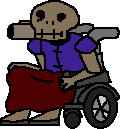

Grandpa

| Health | INVULNERABLE |
|---|---|
| Radius | 20 |
| Height | 32 |
| Speed | 10 |
| Mass | 50 |
| Role | Companion / NPC |
| Age | 95 |
Grandpa
Grandpa is an NPC made for comedy purposes in Doomfoolery, he serves as a simple companion during matches, and also for singleplayer testers
Design
The Grandpa is an old revenant in a wheelchair, he wears a blue armor and uses a red blanket covering his legs, he has only one rocket launcher on his right shoulder, which he tweaked to only shoot homing missiles, he is also smaller than the average revenant, his wheelchair has jetpacks that are still not visible nor have been used in-game, but he can use them to elevate himself or go faster.
Behaviour
Grandpa is present on every map in Doomfoolery, with the exception of Final Destination (FINAL00), Duel maps , and Bonus maps .
in most of the cases, he can be found sharing a room with a BFG or another goodies like blue armors or soulspheres, it is the players choice to let him leave his room or allow him to get out to wander around in the arena. in strange cases, he will be unreachable, but will still be present out of range.
The grandpa can be shot at but will never die, as he has infinite health, upon being shot, he will just scream, players can deal him huge knockback via using a super shotgun or a rocket.
Grandpa is friendly and will never attack a player, the only way he can cause the death of a player is if he gets in the way and too closer to a player that is just shooting a rocket, but thats most likely not to happen due to his slow speed.